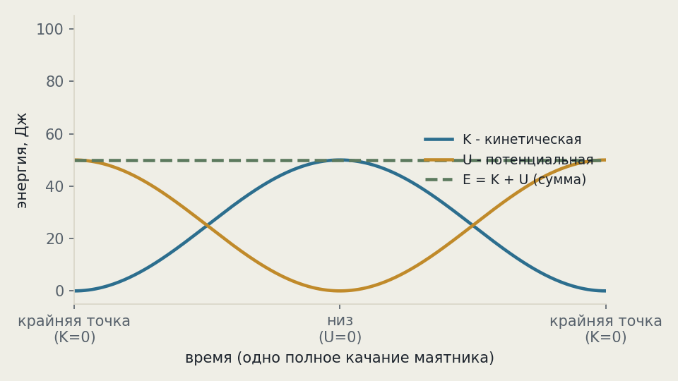
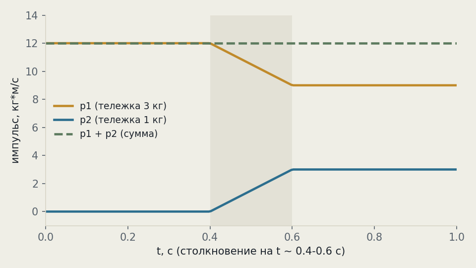

Рабочая заметка · классическая динамика · часть II
Что сохраняется при движении: импульс, энергия, момент импульса
Три величины, которые физика запрещено тратить впустую: сколько бы ни менялась картина внутри системы, их сумма — если система замкнута — остаётся одной и той же до и после.
Из трёх законов Ньютона (см. часть I) следуют три величины, которые в замкнутой системе не меняются со временем: импульс, энергия и момент импульса. Это не случайные совпадения, а прямое следствие симметрий пространства и времени (теорема Нётер, §6). В этой заметке — все три закона сохранения по отдельности с числовыми примерами, а затем один сквозной пример (упругий и неупругий удар), где видно, что импульс сохраняется всегда, а энергия — только иногда.
Три сохраняющиеся величины
Ньютоновская механика даёт не только уравнение движения, но и три «счёта», сумма на которых не меняется, пока систему никто не трогает снаружи.
| Величина | Формула | Сохраняется, когда... |
|---|---|---|
| Импульс | p = mv | нет внешних сил (ΣFвнеш = 0) |
| Энергия | E = K + U | нет трения/сопротивления (силы консервативны) |
| Момент импульса | L = Iω | нет внешнего вращающего момента (Στвнеш = 0) |
Важно сразу разделить два разных смысла слова «сохраняется»: внутри системы величина может свободно перераспределяться между частями (импульс — от одного тела к другому, энергия — из кинетической в потенциальную) — сохраняется только сумма по всей системе, а не значение у каждого тела в отдельности.
Заметьте: условия для трёх законов — разные. Столкновение двух пластилиновых шаров сохраняет импульс всегда, но не сохраняет механическую энергию (часть уходит в тепло деформации) — это разбирается подробно в §5.
Импульс: сумма не меняется
Формулировка. Если на систему тел не действуют внешние силы (или их равнодействующая равна нулю), суммарный импульс системы остаётся постоянным. Это прямое следствие третьего закона Ньютона (часть I, §4): силы взаимодействия внутри системы всегда парные и противоположные, значит в сумме по системе они сокращаются.
Пушка массой 500 кг стоит неподвижно и стреляет ядром массой 5 кг со скоростью 100 м/с. Импульс ядра вперёд равен импульсу отдачи пушки назад — по величине, не по скорости (у пушки скорость меньше, потому что масса больше).
Тот же расчёт, что и для конькобежцев в части I, §4 — там силы возникают в паре и импульс просто «переливается» от одного тела к другому, суммарно оставаясь нулевым, если до взаимодействия система была неподвижна.
Импульс сохраняется в любом столкновении — упругом (шарики разлетаются, суммарная кинетическая энергия та же) и неупругом (тела слипаются или деформируются, часть энергии уходит в тепло/звук). Разница между ними — про энергию, не про импульс. Подробный числовой пример обоих типов — §5.
Энергия: меняет костюмы
Формулировка. В системе, где действуют только консервативные силы (гравитация, упругость — но не трение), полная механическая энергия — сумма кинетической и потенциальной — постоянна:
Классический пример — маятник или качели: в крайней точке скорость нулевая (K = 0), вся энергия — потенциальная; в нижней точке высота минимальна (U = 0), вся энергия — кинетическая. В середине пути — какая-то доля от каждой, но сумма одна и та же в любой точке качания.

Численный пример: тело падает с высоты h = 5 м без начальной скорости (сопротивлением воздуха пренебрегаем). Какая у него скорость у земли?
Масса сократилась — падение без сопротивления воздуха не зависит от массы тела (тот же результат для пёрышка и гири, если убрать воздух — знаменитый опыт с пером и молотком на Луне).
Закон сохранения энергии — не эмпирическое наблюдение, а прямой запрет: чтобы устройство работало вечно и совершало полезную работу, ему нужно откуда-то брать энергию на эту работу без внешнего источника — то есть создавать её из ничего. Реальные механизмы всегда теряют часть энергии на трение и сопротивление (переходит в тепло — тоже энергия, просто менее «полезной» формы), поэтому останавливаются, если их не подпитывать.
Момент импульса: фигурист ускоряется
Формулировка. Если на тело не действует внешний вращающий момент, его момент импульса постоянен. Для вращающегося твёрдого тела L = Iω, где I — момент инерции (мера «сложности раскрутить», зависит от того, как масса распределена относительно оси), ω — угловая скорость:
Фигурист раскручивается с разведёнными руками (большой I, медленно), затем прижимает руки к телу (I падает вчетверо) — вращение резко ускоряется, ровно чтобы L осталось тем же. Это не притянутая метафора: именно так фигуристы физически ускоряют вращение, без какой-либо дополнительной силы.
Числовой пример: фигурист вращается с разведёнными руками с моментом инерции I1 = 4 кг·м² и угловой скоростью ω1 = 2 рад/с. Прижимая руки, он снижает момент инерции до I2 = 1 кг·м². Найдите новую угловую скорость.
Вращение ускорилось вчетверо — ровно во столько раз, во сколько раз упал момент инерции. Никакая мышца фигуриста не совершает работы «на ускорение вращения» напрямую в момент прижатия рук — источник роста кинетической энергии вращения здесь другой (работа мышц против «центробежного» эффекта при подтягивании рук к телу), но сохранение L держится точно в любом случае, независимо от механизма.
Второй закон Кеплера (1609): планета заметает равные площади за равные времена, двигаясь по эллиптической орбите быстрее вблизи Солнца и медленнее вдали от него. Это в точности сохранение момента импульса планеты относительно Солнца — за 70 лет до того, как Ньютон вообще сформулировал законы динамики. Подробнее — второй закон Кеплера.
Сквозной пример: упругий и неупругий удар
Возьмём два одинаковых по массе шара (m = 2 кг каждый): шар A летит со скоростью 6 м/с и сталкивается с неподвижным шаром B. Разберём оба сценария удара.
Упругий удар (энергия тоже сохраняется)
При равных массах в идеально упругом ударе скорости просто меняются местами: A останавливается (vA = 0), B улетает со скоростью, которая была у A (vB = 6 м/с). Проверка по обоим законам:
| До удара | После удара | |
|---|---|---|
| Импульс, кг·м/с | 2·6 + 2·0 = 12 | 2·0 + 2·6 = 12 |
| Кин. энергия, Дж | ½·2·6² = 36 | ½·2·6² = 36 |
Неупругий удар (энергия НЕ сохраняется)
Тележка m1 = 3 кг едет со скоростью 4 м/с и сцепляется с неподвижной тележкой m2 = 1 кг, дальше они едут вместе:
| До удара | После удара | |
|---|---|---|
| Импульс, кг·м/с | 3·4 + 1·0 = 12 | 4·3 = 12 |
| Кин. энергия, Дж | ½·3·4² = 24 | ½·4·3² = 18 |

24 − 18 = 6 Дж кинетической энергии «пропало» — на самом деле не пропало, а перешло в тепло и звук деформации сцепки (закон сохранения энергии §3 не нарушен, просто механическая энергия перешла в немеханическую форму). Импульс же — векторная величина без «немеханических» форм, ему просто некуда деться, кроме как остаться в движении тел — отсюда и разница в поведении двух законов.
Куда это ведёт: теорема Нётер
В части I (§6) уже был анонс: теорема Нётер (Эмми Нётер, 1918) связывает каждый из трёх законов сохранения с симметрией пространства-времени — не совпадением, а строгим математическим следствием принципа наименьшего действия.
| Симметрия | Что значит | Даёт сохранение |
|---|---|---|
| Однородность времени | законы физики не меняются от эпохи к эпохе — эксперимент, поставленный вчера и сегодня, даёт тот же результат | энергии |
| Однородность пространства | законы физики не меняются от точки к точке — сдвинь лабораторию на километр, результат тот же | импульса |
| Изотропность пространства | законы физики не зависят от направления — нет выделенной оси Вселенной | момента импульса |
Это переворачивает интуитивный порядок причины и следствия: обычно кажется, что «сначала есть законы сохранения, а симметрии — их следствие». На самом деле наоборот — симметрии пространства-времени первичны, а законы сохранения из них выводятся формально, через уравнение Эйлера–Лагранжа применительно к действию S (см. часть I, §6, формула (4)).
Все три закона переживают переход в квантовую механику (импульс, энергия и момент импульса становятся операторами, но их сохранение для изолированной системы остаётся точным) и в специальную теорию относительности (энергия и импульс объединяются в единый 4-вектор энергии-импульса, а масса покоя связана с ним через E = mc² — отдельная большая тема). Общая теория относительности — исключение: там сохранение энергии в общем случае перестаёт быть локально точно определённым из-за отсутствия глобальной симметрии времени в искривлённом пространстве-времени, что до сих пор обсуждается на границе физики и философии науки.
На сайте это отдельные законы, если хочется пройти глубже:
Закон сохранения импульса · Закон сохранения энергии · Закон сохранения момента импульса · Теорема Нётер
Эксперимент дома
Сядьте на офисный стул, который свободно крутится, возьмите в каждую руку что-нибудь тяжёлое (книги, гантели, бутылки воды) и разведите руки в стороны. Попросите кого-нибудь несильно раскрутить вас (или оттолкнитесь ногами от пола сами). Пока вращаетесь — резко прижмите руки к груди.
Что заметить скорость вращения заметно вырастет прямо на глазах, без какого-либо дополнительного толчка — ровно та же физика, что у фигуриста в §4: момент инерции упал, угловая скорость выросла, чтобы L = Iω осталось прежним. Разведите руки обратно в стороны — вращение снова замедлится.
Если дома есть настольный «маятник Ньютона» (5 металлических шариков на нитках в ряд) — отведите крайний шарик и отпустите. Заметьте: с другого края отскакивает ровно ОДИН шарик, с той же скоростью, а не, скажем, два шарика с половинной скоростью каждый.
Что заметить оба варианта («1 шарик быстро» и «2 шарика вдвое медленнее») формально сохраняют импульс — но только вариант с одним шариком сохраняет ЕЩЁ и кинетическую энергию (удар между шариками почти идеально упругий, металл почти не деформируется). Природа «выбирает» тот исход, который совместим сразу с обоими законами.
Задачи для проверки
Сначала подумайте сами, затем откройте решение. Числа подобраны так, чтобы ответ выходил целым. Решение везде идёт по схеме: Дано → Закон → Решение → Ответ.
1. Космонавт массой 80 кг в открытом космосе неподвижен относительно станции и бросает от себя гаечный ключ массой 0.5 кг со скоростью 8 м/с. С какой скоростью начнёт дрейфовать сам космонавт?
Дано mкосм = 80 кг, mключ = 0.5 кг, vключ = 8 м/с, суммарный импульс до броска = 0.
Закон сохранение импульса (§2): 0 = mкосмvкосм + mключvключ.
Решение vкосм = −0.5·8/80 = −0.05 м/с.
Ответ 0.05 м/с, в сторону, противоположную броску — медленно, но неостановимо без посторонней помощи.
2. Шар массой 4 кг скатывается без трения с горки высотой 2 м. Какая у него скорость внизу?
Дано m = 4 кг, h = 2 м, g ≈ 10 м/с².
Закон сохранение энергии (§3): mgh = ½mv².
Решение v = √(2gh) = √(2·10·2) = √40 ≈ 6.3 м/с — масса в ответ не входит.
Ответ ≈6.3 м/с (масса шара роли не играет — совпадёт с любым другим шаром без трения).
3. Фигурист вращается с моментом инерции 6 кг·м² и угловой скоростью 1.5 рад/с, затем прижимает руки и снижает момент инерции до 2 кг·м². Найдите новую угловую скорость.
Дано I1 = 6 кг·м², ω1 = 1.5 рад/с, I2 = 2 кг·м².
Закон сохранение момента импульса (§4): I1ω1 = I2ω2.
Решение ω2 = 6·1.5/2 = 4.5 рад/с.
Ответ 4.5 рад/с — втрое быстрее (I упал втрое).
4. Два вагона по 5000 кг каждый сцепляются на скорости: первый едет со скоростью 6 м/с, второй неподвижен. Найдите общую скорость после сцепки и потерю кинетической энергии.
Дано m1 = m2 = 5000 кг, v1 = 6 м/с, v2 = 0.
Закон сохранение импульса при неупругом ударе (§5): m1v1 = (m1+m2)vобщ.
Решение vобщ = 5000·6/10000 = 3 м/с. Kдо = ½·5000·6² = 90000 Дж. Kпосле = ½·10000·3² = 45000 Дж.
Ответ 3 м/с, потеряно 45000 Дж (ровно половина — ушла в грохот и деформацию сцепки).
5. Мальчик массой 40 кг стоит на неподвижном скейтборде массой 4 кг и спрыгивает вперёд со скоростью 2 м/с относительно земли. С какой скоростью откатится скейтборд?
Дано mмаль = 40 кг, vмаль = 2 м/с, mборд = 4 кг, суммарный импульс до прыжка = 0.
Закон сохранение импульса (§2, тот же приём, что для лодки в части I).
Решение vборд = −40·2/4 = −20 м/с.
Ответ 20 м/с, в сторону, противоположную прыжку — маленькая масса скейтборда даёт ему непропорционально большую скорость отдачи.
Опечатка, неверная формула, число не сходится, коряво объяснено — напишите нам: feedback@bridge42worlds.org. Каждое сообщение реально читается, разбирается и по нему вносится правка — это не «в стол».